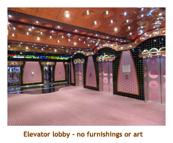

[ Home ] [ Travel ] [ Photography ] [ Pets ] [ Games] [ Rowing] [ Physics ]


Cruising on the Carnival Splendor
Travel
Cruises
Past Cruises (Diaries)
Future Cruises
Rogues Galleries
Land Trips
Diaries (Land Trips)
Hawai'i - Big Island - 04'01
Hawai'i - Maui - 05'02
Hawai'i - Big Island - 04'03
Hawai'i - Kaua'i - 09'04
Hawai'i - Big Island - 04'06
Hawai'i - Maui - 04'06
Mainland China - 05'07
Phoenix, Arizona - 12'07
Greek Isles - 05'08
Hawai'i - Kaua'i - 09'08
Hawai'i - Big Island - 09'09
Hawai'i - Maui - 05'12
Hawai'i - Big Island - 04'13
Ireland - 08'13
Mexico - Cancun 11'13
France/Belgium/Lux 07'15
Hawai'i - Big Island - 05'17
England / Wales - 06'17
Hawai'i - Big Island - 09'19
Photography
Cameras
Underwater
Pets
Tara
Blackie
Whitey
Muffy
Ollie
Rusty
Fluffy
Rufus&Dufus
Games
Rowing
Physics
Rating (out of 5):
Ship  Food
Food  Service
Service  Itinerary
Itinerary
For 15 years we have successully eluded Carnival as a choice for our cruising portfolio. However, this cruise fitted nicely as a back-to-back with our Harmony of the Seas cruise, and we got it for a very cheap rate as a T/A "Seminar at Sea" cruise. What was amazing is that both cruises did the Western Caribbean, but we only repeated one port (Cozumel). And, it was about time that we saw Carnival for ourselves rather than judging based on second or third had info.
Well, the Carnal Splendor is the ugliest ship I have ever sailed. It is the only ship in 70 cruises that I have disliked. The pink and grey decor is nauseus, as is the trim and furnishings around the ship. The main dining rooms were ugly and table cloths were only provided on dress-up nights. The deck layout was very chopped up and confusing, often feeling like "you can't get there from here". Finally there was a lot of noise coming into our cabin from neighbouring cabins and hallway wellwishers, especially in the evenings. Enough about the ship - we most likely won't be on Carnival again!
The ship was fairly full at 3255 passengers (3012 double occupancy). However, it never felt over crowded and we always found seats in the buffet area. The entertainment was mostly provided by the ship's singers and dancers. I think just once there was a magician. We did sit for one of the song and dance shows (very loud), but otherwise avoided it. For some reason we did not compete in a single trivia session. That's the first cruise where we haven't bothered. Didn't miss it!
The cabin steward and our dining wait staff were all excellent. They
were keen to do a good job and nothing seemed to be too much for them.
We also found the food to be very good - lots of variety and cooked nicely.
Muster drill on Carnival is still the old fashioned "assemble at your lifeboat
wearing your life jacket." drill. We were packed like sardines on the promenade
deck where it was hot and suffocating. We stood there for almost 1/2 an hour.
We sure appreciate the other cruise lines that do it sitting down in a restaurant
or bar area, sometimes without life jackets.
Day 1 (Dec 10) - Boarding in Miami
Continuing on from our previous
cruise diary, we left our temporary shelter hotel in
Fort Lauderdale and drove to the Carnival Splendor in the Port of Miami. All signs
of the accident around the tunnel were gone. We reached the terminal building about 1:00.
Check-in was quite fast and we were aboard the ship and to our cabin by 1:30. Our bags
weren't delivered yet so we headed up to the buffet for lunch. It was a strange layout for a
buffet, with the food lines really spread around. Lots of walking to check out all the food.
Muster drill was at 4:00. I mentioned above how uncomfortable it was.
Afterwards we wandered the ship, finding the layout quite confusing. Public areas seemed
to be chopped up, connected by hallways like a maze. At some point we checked our
sea pass cards and noticed that we had late (8:15) fixed dining. We had specifically booked
early dining, and had the confirmation to prove it. How could
they screw that up? We checked with a maitre'd only to
find out that only late dining was available. We were promised though that if any early dining
spot freed up we would get it. We were to receive a note tomorrow stating the outcome.
We ate at the buffet and then went to a 7:00 cocktail party for the "seminar at sea" (SatS) group
(30 of us). The hosting girl (Carnival Sales Rep) explained that she had changed our dining
so that we would all be at 8:15 and at adjoining tables. Suddenly it was clear what had
happened - we couldn't blame Carnival at all. Marjorie didn't mind not eating with the rest
of the group, so we left the decision in Carnival's hands. We consumed our free drinks and
then headed off to bed.
Day 2 (Dec 11) - A day at sea
We were up at 7:00 for a beautiful sunny sea day. We ate breakfast in the buffet. When
we returned to our cabin there was a note for us that early dinner seating was denied. Looked
like the buffet for us. Marjorie headed off for her first SatS lecture and I headed up to the gym.
The equipment was in poor shape - some of the machines not working at all - and those
machines with the touch screen interface seriously misjudged which part of the screen you
touched. I did one workout in German and another in Spanish. Very frustrating. I showered
and then sat out on the promenade deck waiting for Marjorie to return. We had lunch in the
MDR and then Marjorie had to join her group at 1:00 for a group picture on the main staircase.
We wandered the ship and read on the promenade deck to fill in the afternoon. At some point
we received another note in our cabin from the maitre'd stating that we had an early dining
seating for the remainder of the cruise. Yeah!! It was formal night tonight, but we didn't dress up.
Nor did most of the restaurant! We found our new table (for four) and new dinner mates, Mike and Janet.
We enjoyed our dinners with them each night for the duration of the cruise. Their original dinner
mates for some reason opted out, so Marjorie and I were the recipients of the good fortune. I
had lobster for dinner and it was excellent. Afterwards we did the song and dance show, then
went to bed.
|  |
Day 3 (Dec 12) - Turtles and cenotes
We woke up at 6:20 as we docked in Cozumel. This was, by my calculation, our 8th
visit to Cozumel since 2001 and we still found something new to do. We had signed up
for an excursion to a cenote (fresh water sinkhole or cave) and to a turtle beach. We did
the buffet for breakfast right after it opened and it was actually empty! Our tour was at 7:30
so we hustled off the ship wearing our bathing suits and carrying our snorkel gear. We
did the 45 minute ferry to Playa del Carmen, and then boarded a 10 pax van for a
half hour trip south and a 20 minute bumpy gravel road into the jungle to the cenote area.
There is a huge underwater river running under the Yucatan Peninsula, and there are some
eight thousand caves and sinkholes providing access to this river. We were going to snorkel
in two of them. The first was a circular cave (like a covered sinkhole) about 100 feet in
diameter and 10 feet deep. There was a dive group exiting through an underwater tunnel
below us
but we were only allowed to snorkel on the surface. There were a few fish about 4 inches long.
We climbed out and walked to a larger cenote that had dark passages and stalagtites
hanging down to the water. We swam through corridoes from cavern to cavern. We had
to be constantly looking out for stalagtites so we didn't bump into them. They had
installed some underwater lighting so that it wasn't too dark for us snorkelers. After
exploring the cave system, we returned to the van to drive to the turtle beach. The
beach was right in front of some all-inclusives, and there were loads of people in
the water. It was very murky and we only saw a couple of turtles. We swam out further
to a reef, but there wasn't much there. One thing that bugged me was that we weren't
allowed to use flippers. The final part of the excursion involved driving back to Playa
del Carmen for lunch at a beach restaurant. It was a huge restautant / bar with a sand
floor. The lunch was a taco buffet. We had about an hour to wander so found a
grocery store and got some Coke and beer really cheap. We all boarded the ferry and
arrived back at the ship at 5:00 (final boarding was at 4:30 - lucky we were on a ship's
tour!). What a long day! For dinner I had lamb shank. We skipped the entertainment,
wandered for a bit and went to bed early.
Day 4 (Dec 13) - A return to Belize City
We woke up at 7:00 to a cloudy day, as we anchored in the bay at Belize City. The
only other time we had visited Belize City, there was a huge rainstorm that flooded the
city and shut down our planned snorkel trip. This time we had booked a land tour (Best
of Belize City) so maybe we'd be luckier with the weather. Our tour wasn't until 10:00, so
we had a leisurely breakfast in the MDR. At 10:00 we hopped in the tender and motored
to shore to catch a 20 pax van. We drove through the city and made our first stop at the
famous Baron Bliss Lighthouse, built in 1885. Then we were back in the bus for some
more city sights. The city was a mix of mansions and shacks, and everything in between.
Our second stop was at the Museum of Belize. The building was originally constructed in
1857 as a prison (until 1993).The museum was very interesting with a
wonderful postage stamp exhibit. The historic exhibits focused mainly on the slave trade.
While we were in the museum it poured with rain (outside). It let up as we exited the
museum, but areas of the streets were flooded ankle deep.
We tiptoed through the water to the bus and then resumed our tour. Our third stop
was at St. John's Cathedral, head of the Anglican Diocese of Belize. It was very interesting
inside with a lot of mahogany woodwork, and we got to meet the minister - a little old
lady in her 80's. On the road again, our next stop was at the "Belize" photo stop - huge
letters overlooking the ocean. The tour guide kindly took pictures of all us tourists. Our
fifth and final stop was at a restaurant / private beach complex where we had an hour to
eat or wander. It went by the name of "Old Belize Adventure, Cultural and Historical
Center at Cucumber Beach". We just shared a Coke and wandered around. The water park looked fun,
but there was an extra charge ($10) to enter. While we were there the sun came out and brightened
everything up. Finally it was back to the tender dock (3:00) and
then to the ship (3:30). Being too late for lunch, we went to the buffet for an ice cream and
then read until dinner time. For dinner I had braised short ribs. We skipped the entertainment, wandered
and then went to bed.
Day 5 (Dec 14) - Roatan, Honduras
We were up at 7:00 and had breakfast in the buffet. We had been to Roatan three times before
and had done some mediocre snorkeling. This time we had nothing planned. It was a hot
sunny day. We were in Mahogany Bay which was recently developed by Carnival Cruises as a
private retreat. We went ashore and wandered the cruise mall, looking for free internet. I wasn't
feeling to well, so headed back onto the ship. Marjorie found wi-fi on the beach area. We had
lunch in the buffet and then wandered around for a while. I read for the later afternoon, but still
didn't feel too well. I think it was from the Mexican buffet we had eaten yesterday at Playa del
Carmen. I skipped dinner tonight and headed to bed early. I think that's the first dinner I've missed
in 70 cruises! There have been times in the past where the ship has been rocking and rolling, and
only 20 or so people made it to the dining room, but I was there! Must be getting old.
Day 6 (Dec 15) - Costa Maya
We were up at 7:00 as we docked at Costa Maya. We had been here years ago when
there was no dock, just tenders. Now there is a nice new dock. The previous time I had
done a biking / kayaking adventure (with Dave), but this time we had nothing planned.
There was a new cruise mall development at the end of the pier and we could see
the shanty town in the distance were we had riden our bikes before. There was really
nothing to do without booking a tour.
We took our time eating breakfast at the buffet. Later, we walked ashore to explore
the cruise mall where Marjorie found some free wi-fi. It was very hot out.
We had lunch in the buffet and then read and wandered the ship for the afternoon.
It was a nice day to read on our balcony, but unfortunately the Nowegian Breakaway
ship was docked across from us. Our balcony faced the Norwegian ship. They had
placed humongous speakers on the pier and were playing pop music very loud.
So, no view and lots of noise. The promenade deck on the other side of the ship was much nicer.
For dinner I had braised shortribs. They were very dry, but in
fairness, all of our other dinners were excellent. When we got back to the cabin our
Tortuga rum had been delivered. Once again we skipped the entertainment,
read some and then went to bed.
Day 7 (Dec 16) - Georgetown, Grand Cayman
We were up at 7:00 for the final port of the cruise - Grand Cayman. We had been here
5 or 6 times before and had done Cemetery Reef, Stingray City and, in later visits, snorkels
at Eden Rock in sight of the cruise ships. Our most recent visit was rough and stormy and the
ship had to anchor at Spot's Bay, around a sheltered part of the island. Eden Rock had crashing
surf and the beach was closed. This time we were just going to walk around the
town, seeing what had changed. (and hopefully getting free wi-fi). We wouldn't be arriving
at GC until 10:00, so we took a leisurely breakfast in the MDR. Sometime after 10:00 we
boarded a tender and headed for Georgetown. First we checked out Eden Rock, which was
now upgraded to "Nature Park". There was a new bar and other facilities, but the little beach
was still free to use. We could see a school of 4 foot tarpons cruising the area. We always
enjoyed watching them when snorkeling there. Then Marjorie found free wi-fi at a small strip mall.
After doing our email, we crossed the street to a liquor store to buy a bottle of Tortuga rum
for our friend Shelley. It was a "duty free" shop and they delivered the rum to the ship's
personnel for delivery to our room at the end of the cruise. We tendered back to the ship
at 1:00 and did lunch at the Pizza Bar. For the afternoon we read, wandered, and I went to
the gym. For dinner I had broiled fillet. It was excellent. Afterwards we read and wandered,
then went to bed.
 |

Day 8 (Dec 17) - A day at sea
We were up at 7:30 for our final day at sea. It was a beautiful warm sunny day.
We were steaming north on our final leg to Miami.
Our first obligation of the day was a Dr. Seuss character breakfast with the SatS group at
9:00 in the MDR. It
was very well done, with Dr. Seuss characters for photos (Cat in the Hat, Mr. Grinch,
Sam-I-Am), lots of colourful food
and even green eggs and ham! Lots of fun for the kids (and the adults).
The dining room was nicely decorated and all the waiters had fluffy
wigs and "Thing 1" and "Thing 2" (and higher) t-shirts. For
the rest of the morning, Marjorie headed off to her final SatS lecture, while
I wandered and read, and then headed up to the gym for a workout. During
the cruise, nothing had been done to fix any of the broken equipment. I assume
that equipment maintenance is a "home port" activity. I have found this same
problem on most cruise ships we that have sailed on. Marjorie
returned from her lecture
around 12:00 and we did lunch in the buffet. We wandered for a
while and then found chairs in a warm spot on the promenade deck where
we read our books. What a beautiful afternoon. For dinner I had prime rib
which was very good. We said goodbye to our dinner mates, Mike and Janet,
whom we had enjoyed dinner with every night. We went back to our room to
pack and put our bags out ready for disembarkation tomorrow.
Once again we skipped the evening entertainment and headed to bed.
Day 9 (Dec 18) - Miami and Home

We arose at 7:00 AM, long after we had docked in Miami. We had a quick breakfast in the MDR. We were out of our cabin by 7:45 and off the ship by 8:00. We located our bags and went through US Customs. Then Marjorie phoned the shuttle company (KSA). It was quite a wait for the shuttle, but by 9:00 we were on our way to the Miami airport. At the airport it was quite quick through check-in and security. We were settled in the gate area by 10:30. Our 12:00 flight to Montreal was ontime, and we arrived at YUL at 3:30. We reunited with our baggage and went through Canadian Customs and then rechecked our bags and passed through security (again). When will all airports have the luggage photo thing (instead of having to locate your bags), and "secure side" customs? We've encountered it in 2 or 3 airports, and it sure is convenient. We were to the gate area by 4:30, well before our 7:30 flight, so we had dinner in a sandwich shop. When we returned to the gate, the plane was delayed an hour! So, we didn't arrive in Calgary until 11:00, an hour late. Christina was there to pick us up. She ferried us back to her place, then we drove home in our own car. It was almost 1:00 AM when we arrived home. The kitties were happy to see us and the house was fine. Overall we enjoyed the cruise, especially the leg on the Harmony of the Seas. I don't think we'll book Carnival again though. By fluke, we avoided Calgary's worst 2 week cold snap in 20 years. Bonus!!